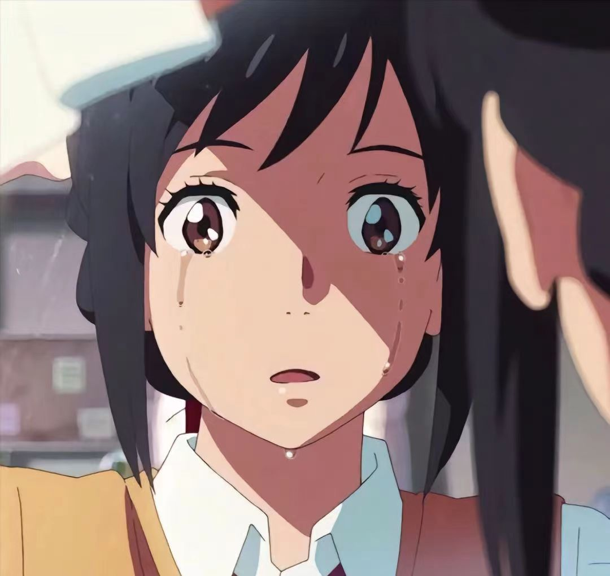
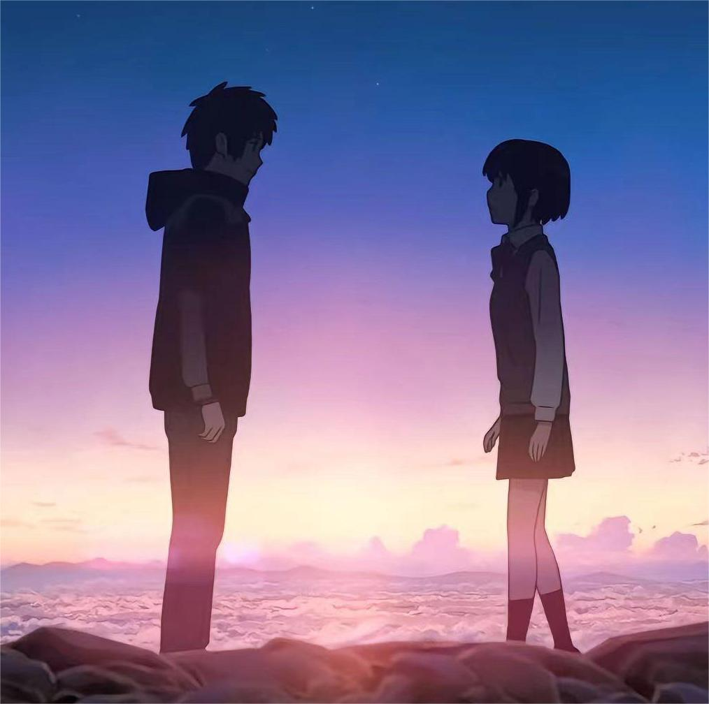

剧情简介
迪亚马特彗星每逢1200年造访地球。在深山小镇糸守町中家族世代经营镇内“宫水神社”的高中少女宫水三叶、以及东京四谷的高中少年立花泷，从某天开始，在睡觉的时候，就会灵魂互换，醒来什么都不记得，感觉像做了奇妙的梦，但周围的人会讲出他们昨天有违平常。他俩很快意识到这种情形，困惑之中开始在彼此手机留言，逐渐地变得习惯于身体切换，并干预对方的生活。三叶不仅乐于所向往的东京生活，也利用女人心这点，帮助泷更接近其打工的美女前辈奥寺，促成与她约会；而泷以阳刚的形象，帮助柔弱的三叶在她的学校更受欢迎，双方逐渐对彼此有好感。
有次三叶（泷）和妹妹四叶、外祖母一起徒步至宫水神社位在镇外山上的“御神体”，途中外祖母告诉她们：“产灵”、“结”都可以连结人与时间，在本质上是相同的，因此宫水家族的历代巫女都编织结绳来体现，水酒等进入人体也能和时间形成连结。三人参拜位于破火山口型洼地隐世上的御神体，并以口嚼酒为半身献祭。回程时当三叶（泷）和妹妹四叶、外祖母在观看糸守湖的夕阳时，外祖母对三叶（泷）说：“你是不是在做梦？”，泷听完后从床上惊醒起来，并发觉自己在流泪。
泷与奥寺约会时，偶然看到飞弹市照片唤起记忆，三叶留下信息告诉泷约会后正好可以看到彗星，泷觉得此话十分奇怪，决定打电话询问却打不通，而且自那天起就再也没有跟三叶交换身体。心中充满疑问的他利用擅长的素描画下画段印象，并与同学藤井司、前辈奥寺一起去飞驒探个究竟。在泷一行人拿着素描询问当地居民但四处碰壁之际，遇上拉面店老板闲聊回忆起家乡，得知该地名为“糸守町”，并在拉面店老板的带领下来到已无人居住的原糸守町区域；由于三年前迪亚马特彗星分裂出来的彗星击中当时正在举行秋日祭典的宫水神社一带，村镇被摧毁大半，超过500名镇民、包括宫水本家及其朋友皆不幸罹难。不相信这个事实的泷打开手机，却发现三叶的留言全部逐条消失，而历史文献亦将她列在罹难者名单之中。当天晚上和奥寺谈起泷手上不知何来的结绳信物时，泷想到三叶外祖母曾经说过产灵可以连结人与时间，便决定前去糸守町寻找和三叶以及彗星坠落有关的事物。他留下字条跟藤井司、奥寺说明原因后，在拉面店老板的帮助下前往糸守町的御神体。
泷到达御神体后，尝试喝下三年前三叶所制作而自己当时留下的口嚼酒，一阵晕眩袭卷而来、他意外绊倒时，过去三叶人生历程的种种片段彷若历历在目，等到泷回过神来，发现自己再度与三年前的三叶交换身体。在三叶（泷）思考如何在彗星坠落前拯救糸守町时，又被外祖母识破，并提起自己、二叶、甚至整个宫水家都有过似梦恍惚时候，但是自己已经错过了记忆，特别告诫三叶（泷）要好好珍惜现在这个缘分。三叶（泷）向友人敕使河原克彦、名取早耶香说明情况并且开始策划避难行动，查出小镇所环绕的糸守湖也是陨石造成的撞击坑，更加深他们的信念。敕使河原克彦负责用水胶炸药爆破糸守町附近的变电所造成骚动，名取早耶香则在爆炸后透过广播疏散镇民，三叶（泷）则是跑去跟身为町长的父亲要求疏散镇民，争执之中町长亦从三叶举止发现她似乎不是三叶。在三叶（泷）奔走之际，在御神体的泷（三叶）醒来对于泷的身体为何在御神体感到不明白，好奇的泷（三叶）在走出御神体的山顶时见到消失的小镇，才领悟到本人已在当时观看彗星的时候身亡。当三叶（泷）回到御神体后，在黄昏之时两人得以相见。在短暂的寒暄后，为避免再次相忘，泷提议双方在对方手上写下自己的名字。三叶正要在泷手上写下名字之际两人却又分离，而泷在三叶手上写下了“喜欢你”。回复真身的三叶继续执行泷未完成的计划，造成骚动促使镇民避难，但其同侪的行动遭町长阻止，此时三叶见到彗星分裂碎片开始坠落，赶紧再次去游说父亲……
时间跳到泷自飞弹回来五年后，泷已经进入社会工作，对他在御神体时的种种印象已变得模糊，以为是跟藤井司、奥寺吵架然后负气跑到山顶散心；回到东京后却不自觉地对糸守这个地方很在意，从新闻记录中得知镇民因町长以“演习”名义指示至当地高中避难而躲过一劫。即使距彗星灾难八年后（2021年），大学毕业在东京四处求职的泷，仍依稀想找寻某人，期间数次与三叶擦肩而过。在一次偶然机会下，泷与三叶隔着不同电车的车厢，惊讶地遇见了彼此。双方下车后焦急地想与对方见面，最终在阶梯相会。此时的泷和三叶逐渐对彼此有了熟悉的感觉，在那久别重逢的当下，眼泪从两人的脸庞止不住地滑下。两人正要再次错过之时，不忍再次错过的泷开口问道：“我是不是在哪里见过你？”，三叶含泪回答“我也是”，最终，双方笑着对问：“你的名字是？”。